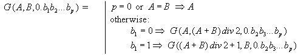

Home Page
F.A.Qs
Statistical Charts
Past Contests
Scheduled Contests
Award Contest
| Online Judge | Problem Set | Authors | Online Contests | User | ||||||
|---|---|---|---|---|---|---|---|---|---|---|
| Web Board Home Page F.A.Qs Statistical Charts | Current Contest Past Contests Scheduled Contests Award Contest | |||||||||
|
Language: Random number
Description A Black Box algorithm supposes that natural number sequence u(1), u(2), ..., u(N) is sorted in non-descending order, N <= M and for each p (1 <= p <= N) an inequality p <= u(p) <= M is valid.
Making tests for this algorithm we have met with the following problem. For setting a random sequence {u(i)} a usual random data generator did not fit. As the sequence itself had been imposed certain restrictions, the method of choosing the next random element (in the interval defined by restrictions) did not give the random sequence as a whole. We have come to a conclusion that the problem can be solved in the following way. If we arrange all possible sequences in certain order (for example, in lexicographical order) and assign each sequence its number, after choice of the random number it is possible to take the correspondent sequence for the random one. At the first glance it seems enough to make up a program generating all these sequences in such order. Alas! Even having not great values of M and N it would have taken any powerful modern computer centuries to enumerate all such sequences. It turned out it was possible to avoid generating all sequences if we managed to create required sequence according to its number immediately. But even this statement does not cover all. As the amount of sequences is quite large, the number can be a long one, composed of hundreds decimal digits, though our random data generator could give only normal numbers. We decided to produce a long random number from a real random number distributed in [0,1]. Namely, present the number in binary notation: 0.b(1)b(2)..., where all b(i) = 0 or 1. Let us set a regulation to associate such real number to an integer from [A,B] segment: Formula 1:  Here we suppose, that A <= B, p >= 0, and ``div 2" is an integer division by 2. Let M, N (1 <= N <= M <= 200) and a binary real number 0.b(1)b(2)...b(p) (1 <= p <= 400) be given. Write a program to find out the corresponding u(1), u(2), ..., u(N) sequence, i.e. to find a sequence with G(1,T,0.b(1)b(2)...b(p)) number in lexicographical order of all possible {u(i)} for the given M and N (T is the quantity of such sequences). Numeration begins with 1. Keep in mind that in lexicographical order {l(i)} proceeds {h(i)} if after omitting equal beginnings, the first number of {l(i)} tail is smaller than the first number or {h(i)} tail. Following example illustrates the list of all possible sequences for M = 4 and N = 3 in lexicographical order. A note (it does not concern the solution of this task): The choice of random binary vector 0.b(1)b(2)...b(p) does not give an absolute uniform random data generator if we use the Formula. However, taking into account the fact that [A,B] interval is big we shall obtain a distribution applicable in most cases. Example
(here T=14) Input The first line of input contains M and N. The second line contains binary real number 0.b(1)b(2)...b(p) (without leading, trailing and other spaces). Output Write into the output the corresponding sequence u(1), u(2), ..., u(N). The sequence numbers should be separated with one space. Sample Input 4 3 0.01101101011110010001101010001011010 Sample Output 2 2 4 Hint A note (it does not concern the solution of this task):
The choice of random binary vector 0.b(1)b(2)...b(p) does not give an absolute uniform random data generator if we use Formula 1. However, taking into account the fact that [A,B] interval is big we shall obtain a distribution applicable in most cases. Source |
[Submit] [Go Back] [Status] [Discuss]
All Rights Reserved 2003-2013 Ying Fuchen,Xu Pengcheng,Xie Di
Any problem, Please Contact Administrator